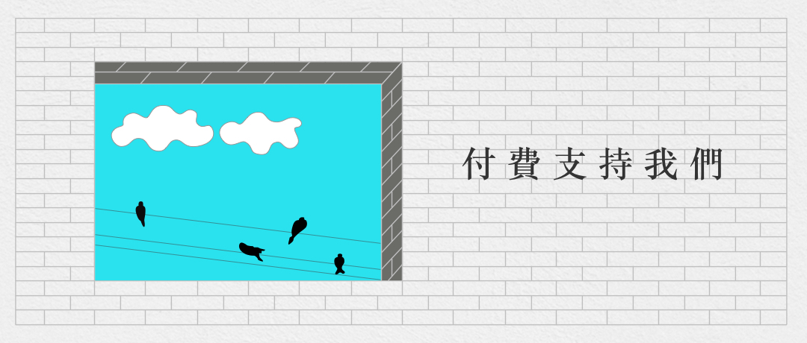

【現場】北京亮馬河：此刻，我們在這裏就是意義
他們留下了各種口號、宣言，也為某種自由的信仰而吶喊。
Figure 1: 2022年11月27日晚上，北京亮馬河畔，大量市民參與悼念烏魯木齊大火遇難同胞的遊行，部分人手持白紙，高喊口號。攝影：Sophie Mou
端傳媒中國組
刊登於 2022-11-29
＃北京亮馬河＃封控抗議潮＃動態清零＃每週推薦＃烏魯木齊＃中國大陸
11月27日晚上11點半左右，被疏散的人群，重新聚集在北京朝陽區京城大廈附近（新源里、新源南路與新東路交界處、朝陽區新源南路12號），規模至少500人。他們當中有不少人拿着鮮花、空白的A4紙，被警方分據於丁字路口的兩側，口號不時響起。
「不要核酸，要自由」「言論自由，新聞自由」「上海放人」「電影自由」「要自由」「取消核酸」。
口號和吶喊的聲量加大，小範圍的騷亂隨之而來。聚集的中心區塊，有人帶頭唱起了國歌，便衣、警察涌入人群，試圖阻止這一行為。當人群中發出「不許動 手」的聲響那刻，宿明看到，警察正在大聲和吶喊的男生爭吵，讓他停止，並用肩膀將他往人群外面頂。這個過程大約持續了一分鐘，聚集的人群，讓那個配有黑色 國徽帽的警察低下了頭，往人群的左側後退。
23點58分，周圍的人更多了，警方在馬路中央站成一排，化身人牆，企圖分散人流，不讓兩邊的人群流動。但口號，更響了，尤其那句「上海放人」，整整持續了2分鐘上下。
28日，零點58分，一名男生在馬路側邊的大橋附近大聲喊，「我們走起來吧，遊行就是要走起來才有意義！」
離他大約50米左右，前排的女生回應道，「此刻，我們在這裏就是意義」，隨後，攢動的人群一次次地重回馬路，面對警方毫不示弱。
這是一場在北京的抗議活動，從27日晚間一直持續到28日凌晨4點左右，人群與警察在朝陽區亮馬河附近周旋，從亮馬河－亮馬橋地鐵站－新源里（京城大廈）－農展橋，最後散去。他們留下了各種口號、宣言，也為某種自由的信仰而吶喊。
亮馬河聚起來了
外國使館聚集地（周邊有加拿大、阿富汗等使館）亮馬河，是這場遊行的起始點。人群裏有學生、影視行業從業者、互聯網人，也有媒體記者，還有本地居民。當晚，不少隔離在家的北京人都在各自的朋友圈看到了消息。
「亮馬河聚起來了。」
27日20點前後，北京某高校21歲學生徐蕾（化名）和她的同學兩人帶着白色空白A4紙和一束乾花，來到亮馬河參加悼念活動。
她們就租住在附近，沒有收到任何消息。但此前，微信裏瘋傳的各種抗議文章、視頻，不可避免地讓她們得到感召。徐蕾說，「就是一個悼念的想法，為了烏魯木齊和上海發生的事，我們不服。」
徐蕾她們趕到亮馬河時是晚上8點半，她們把花放在了河邊，就聽到人群裏的口號響了起來。後來，人越來越多。她們害怕走散，一直和人群在一起。21時07分，人群臨時更改集合地點至亮馬河北岸，但沒有指定具體位置。
隨後趕來的參與者不斷帶來鮮花和蠟燭。人們圍繞着鮮花和蠟燭，約有30人手舉白紙或寫有悼念文字的紙張。大家開始合唱《國際歌》和《送別》。現場不斷高呼反疫政、紀念新疆逝者、要求釋放上海被捕人士的口號。
亦有人高呼，「我是新疆人，為我在大火中遇難的同胞們哀悼！」人群迅速回應道：「我們都是新疆人！」
警察和便衣在21點左右趕到了現場，勸人群不要聚集，並在亮馬河周圍設置了警戒線。人們想要走近，只能繞行。21點10分左右，警方驅散的動作加大。徐蕾被警方推出了聚集區，她親眼看到警察把一個喊着「不要核酸，要自由」的男生拉上了警車。
「他沒做錯什麼，就說了句話而已，就被帶走了。」徐蕾回憶，當時，人群試圖阻擋，但警察進得很快，直接就拖走了。
王猛是在21點20分時來到的亮馬河，那裏已經聚集了上百人。木板和花壇邊上擺放着許多鮮花和蠟燭，還有幾瓶新疆烏蘇啤酒。幾張白紙上寫着「悼念11•24烏魯木齊火災遇難者」。
沒多久，人群中開始傳開亮馬河北岸兩側出口聚集大量警力並開始封鎖的消息。無法來到北岸的參與者，只得前往南岸。王猛目測，南岸最多時可能有200人。人們點亮手機屏幕照向對岸同行者，呼應、支持。
21點50分左右，警察增援趕到，亮馬河兩岸被徹底封堵，人群被驅離。人群從南北兩岸向新源街合流。王猛估計至少有300人。約10分鐘後，人群在新源街京城大廈門前停留。
悼念活動升級，人們不再只是表達悲傷。
Figure 2: 2022年11月27日晚上，北京亮馬河畔，大量市民參與悼念烏魯木齊大火遇難同胞的遊行，現場警察要求聚集的群眾離開。
流動的支持網
有人被抓，加之警方的驅散，幾百人往新源里方向擴散。不斷有新人加入，連成了一片討要自由的支持網。
王猛的朋友李康23點50分趕至現場時，新源南路方向的路口已被警車和警察封堵，但新東路南北向仍有車流通行。人群遠未散去。不過，幾分鐘之內，新東路南側的路口也被管控，所有來車只能掉頭繞行。
新源南路和新東路位於北京東二環和東三環之間，是三里屯和使館區範圍內的重要道路。兩路交匯處是一個雙向六車道的大型丁字路口。
聚集的人們呈扇形散開。核心區不時傳出口號和歌聲，他們被警察圍堵在最早被封的新源南路路口一側。中間主路隔離帶附近是三三兩兩的警察和被衝散的參與者。被疏散至外圍的人群，分散在人行道、花壇沿和小區圍牆邊。
零點剛過，警察一字排開，橫在丁字路口中間。兩輛大巴車載來警力增援，牢牢圍住核心區人群，其餘警察開始驅趕路口區域內的人群，他們向人群喊話：「回去吧，回去吧，別在這兒聚了，走吧」「多冷啊，走吧」「散了散了散了」。
人群緩慢離開丁字路口中心區域。
仍不斷有人跨過隔離綠化帶和低矮圍欄走向核心區。附近的警察出言勸阻，沒有動手攔截。
聚集的人群中忽然響起了國歌，在升溫的情緒中，衝突出現。幾名警察和便衣阻撓一名想要加入人群的女生，她大聲斥責「你別摸我！」身邊人群迅速圍攏至女生四周質問警察，「你是誰，說出你的名字。」在人群的幫助下，女生成功掙脫阻攔加入了人群。
人們開始呼喊更激進的口號：「電影自由」「言論自由」「性別自由」。一名男生激動地大喊：「我們沒有敵人，我們唯一的敵人只有愚蠢。」「不自由和窮！」
涌向人群的警察並未停止，他們朝向核心區人群組成人牆。人群開始騷動，有人默默撤離，也有人仍在堅持大喊「取消核酸！」。
警察順勢將中間的人群向外圍推，一面說小心摔倒，一面說趕緊離開。從核心區被推搡到外圍的人群裏，不斷響起怒吼：「你們要把我們推出北京嗎？」「你們為誰服務？」「你們的工資從哪兒來的？人們的稅！」「你們推我們的時候是什麼心情？」
質問聲並未打斷警察的行動。人群一邊高喊「放人」「住手」，一邊向後退去。幸運的是，他們的後方是一處小區的大門，空間開闊。他們想守住陣地，但警察的力量遠超過他們。
凌晨1點的北京，警察和警車，在稀少的車流和人流中，格外扎眼。
Figure 3: 2022年11月27日晚上，北京亮馬河畔，大量市民參與悼念烏魯木齊大火遇難同胞的遊行，現場警察要求聚集的群眾離開。
新源里的某些瞬間
得知亮馬河有人群聚集的時候，宿明剛到家沒多久，直接就在微信裏問了身邊朋友要不要一起，然後打了車就往那裏去。
晚上11時左右，宿明下車到達亮馬橋地鐵站，但沒辦法準確找到聚集點。周圍已經被警戒線包圍，夜晚的警燈特別明顯，宿明和朋友往河附近走近。為避免安全問題，他們分成兩路，一個步行，一個騎共享單車在23點20分來到了新源里的現場。
宿明到達時，恰好是人群重新聚集的時間。在遠處，宿明聽到了叫喊聲,目睹了警察化身人牆的那一幕，也看到權力機器在面對群衆質問時的無力。
路邊的一位男士，用一種和藹的口吻和離他1米不到的警方溝通。此前，警方試圖從馬路對面的人群中，把一位女生強行拉上警車。
他對警方說，不要把這個（疏散）弄那麼激烈、不要這麼搞，為什麼要這麼搞，不需要的。只是她勇敢，咱們每個人都想這麼說，只是沒她勇敢。說完這段話之後，對面爆發出掌聲。宿明遠遠看到，警察鬆開了手，沒有人被帶走。
但這並不是常態，凌晨1點左右。有一名女生被警方帶走，據在場的媒體朋友說，在新源里，前後大概有3個人被帶走。警察也沒有透露任何原因，截至目前，也沒有收到任何消息。
這是宿明第一次在國內見到這樣的場景。壓抑已久的人們聚齊，儘管大家都有各自不同的立場。可在當下，就像人群中那句話，「此刻，我們在這裏就是意義。」
有幾個瞬間，讓宿明印象深刻。
在大廈對面的小區，有不少本地居民。一位阿姨戴着印有國旗的口罩從小區裏走了出來。見到此景，她說，「還是年輕人厲害，世界是他們的。」
宿明還看到，在警察人牆散開之後，有陌生人因為這場「抗議」而漸漸生出了感情，他們相互留下聯繫方式。
還有人目睹了抓人的過程，哭着喊着，「有本事去抓核酸機構，抓我們老百姓幹嘛。」
零點40分左右，幾輛大巴車開來，宿明收到了來自朋友的消息，說現場有可能要放瓦斯，提醒她注意安全。
1點02分，由於警方刻意想要分散聚集的人群，他們不讓馬路兩邊的人流互通。宿明前面一名女生向人群說，「我們可以手挽手地往前走，要不然會被打散 的，我們已經被打散了。」她說完後，警察往這邊涌過來，嘴裏開始叫嚷，「幹什麼呢」，然後直接上手，把挎着手想要往前走的兩位拉開。最後，大約10幾個警 察連成一片，在人群裏推着、拉着，打下了宿明前面一名女生的帽子，也用手劃到了她的臉。
宿明一直舉着手機在拍，但場面混亂，畫面裏，攝像頭有時是對着人，有時是黑壓壓的一片人影。
警察前面有一個高個男生，穿着黑色的過膝羽絨服，他對着人群喊着，往後撤、後退。最後，他舉起了雙手，背對着警察，正對着人群，說「我們自己走。」
但人群顯然不願意，覺得他是便衣。宿明邊上的人在說，剛才警察打了我的頭。
「讓打人的警察出來」。
如此合理的理由，最後的結果是，「撤、撤，兄弟們。」
1點11分，「放人」的聲音不斷稀稀落落地傳出，越來越弱。看到這樣的場景，宿明蹲在地上，點了好幾根菸，很難受。1點40左右，新源里周邊的人散開。宿明和朋友收到消息，人群在農展橋附近又聚了起來。他們趕了過去。
Figure 4: 2022年11月27日晚上，北京亮馬河畔，大量市民參與悼念烏魯木齊大火遇難同胞，現場有燭光燃點。
周旋、散場
1點52分。宿明來到農展橋下，人群正被警方從橋上橋下往邊上驅散。很多對情侶，他們手牽着手，向宿明走來。橋上的人很零散，大約10幾個人，他們想要下來，但害怕橋下的警察。更多的人在橋下，大概100多人，被警方困在裏面。
農展橋下，是一條隧道。路過的車，停了下來，有的將油門焊死，發出猛烈的排氣聲，還有的鳴笛不止，直到警察上前，他們才離開。
這裏的人群散得很快，凌晨2點半，農展橋周邊只剩維持秩序的警察。人群回到了亮馬橋地鐵站B口附近，但沒停留多久，又遭到了警方的驅趕。
此時，已經離開丁字路口的李康一行，決定再回原來的集會點去看看，去河的另一側集會點見見很久沒見的朋友。但十字路口兩側停靠的四五輛警車截斷了去路。
路過的兩名女生停下來和李康聊天，聊天之間，其中一名女生扯了扯口罩，她說：「今天來就是為了不戴這個，要不是為了擋臉誰還戴。」雖然警車就在他們兩米之外，但年輕人完全不在意。車上躺着的警察也是，他們昏昏欲睡。
又走過來幾名年輕人，他們看上去有點沮喪，其中一名女生說：「我們才這麼點人，警察人太多了。」
和他們道別後，李康和朋友們還是決定試試。這時已經是凌晨兩點，他們向丁字路口方向走了七八百米後，遇到了警方的封鎖線。他們謊稱車停在路的另一側。意想不到的是，五六名警察中，一名老警察沒多盤問就讓他們通過了。
從丁字路口走到亮馬河河邊已經是凌晨兩點半，李康、王猛還有朋友們在黑暗中沿河而行，主路燈火通明。出現人影時，大家都有點緊張，走近後發現不是警察，彼此都鬆了口氣。
穿過使館區來到亮馬橋時，李康看到，這裏也已經散場。
尾聲
北京再次回歸平靜。載李康來到現場的網約車司機告訴他：「這是我最近見到人最多的一次。」
李康、王猛不再避諱身邊的警察，站在橋旁敘舊。一排警察中有人走過來好言勸說：「都兩點了，別在這兒說了唄，該回家睡覺了。」
宿明見到的最後一幕，是在附近的街道上。人群邊走邊喊，不斷重複：「要自由」。
凌晨3點48分，宿明和朋友找到了一家還開着的7-11便利店，買了兩瓶水。結完賬，準備出去的時候，一名戴眼鏡的女生走了進來，她臉上有些汗，氣息也喘着，說，「我手機沒電了，這裏有充電寶嗎？我想買瓶水。」
店員搖頭，女孩離開了。
宿明看了眼朋友，拿起了剛付完錢的維他檸檬茶給她送了過去。宿明感覺，看到了他/她們，就像看到了未來的希望。
宿明想記住今夜，涌動的人群、空白或填字的A4紙，還有地上的蠟燭和花，那些所有的瞬間，是從吶喊中衝出的希望。
新的轉機和閃閃的星斗，正在綴滿沒有遮攔的天空，看那，那是未來人們凝視的眼睛-–—北島《回答》
應受訪者要求，均為化名

2017年7月，端傳媒啟動了對深度內容付費的會員機制。但本文因關乎重大公共利益，我們特別設置全文免費閱讀，歡迎你轉發、參與討論，也期待你付費支持我們，瀏覽更多深度內容。
＃北京亮馬河＃封控抗議潮＃動態清零＃每週推薦＃烏魯木齊＃中國大陸
本刊載內容版權為端傳媒或相關單位所有，未經端傳媒編輯部授權，請勿轉載或複製，否則即為侵權。